第 17 讲：材质与外观——从 BRDF 到微表面模型
用 BRDF 统一描述材质，并解释漫反射、镜面反射、折射、菲涅尔与微表面理论
◆ 学完这一讲，你应该能
学完能解释 BRDF 的定义与物理意义，并说明它为什么是材质的数学等价物
能推导漫反射（Lambertian）BRDF 的常数形式并解释其能量守恒含义
能描述完美镜面反射与折射的方向关系，写出反射方向公式与 Snell 定律
能说明菲涅尔项的作用，并用 Schlick 近似估算反射率随角度的变化
能解释微表面理论如何用 D、G、F 三项构造粗糙表面的 BRDF
能区分各向同性与各向异性材质，并说明 BRDF 的互易性与能量守恒性质
核心结论速记
材质在图形学中就是 BRDF：它定义了入射光如何被表面散射到各个出射方向。
漫反射 BRDF 是常数 \(f_r = \rho/\pi\)，其中 \(\rho\) 是反照率（颜色），除以 \(\pi\) 是为了能量守恒。
完美镜面反射满足入射角等于反射角，且反射方向与入射方向关于法线对称。
折射遵循 Snell 定律 \(\eta_i \sin\theta_i = \eta_t \sin\theta_t\)，当光从光密介质射向光疏介质且入射角过大时会发生全反射。
菲涅尔项描述反射率随入射角变化：掠射角越大，反射越强；Schlick 近似给出简单公式。
微表面理论把粗糙表面看作大量微小镜面，其 BRDF 由法线分布 D、几何遮蔽 G 和菲涅尔 F 三项组成。
各向异性 BRDF 依赖方位角差 \(\phi_r - \phi_i\)，由表面微观结构的方向性导致，如拉丝金属。
BRDF 必须满足非负性、互易性和能量守恒，这些性质可用于验证和简化模型。
011. 材质即 BRDF：从外观到数学
在图形学中，我们看到的“材质”本质上是光线与表面相互作用的方式。课件用一只咖啡杯的例子说明：同一个模型，赋予不同的材质，渲染结果截然不同。那么材质在数学上是什么？答案是 BRDF（双向反射分布函数，Bidirectional Reflectance Distribution Function）。 \nBRDF 描述了从入射方向 \(\omega_i\) 来的光，有多少被反射到出射方向 \(\omega_r\)。严格定义是：出射辐射亮度 \(L_r(\omega_r)\) 与入射辐照度 \(dE_i(\omega_i) = L_i(\omega_i) \cos\theta_i d\omega_i\) 的比值： \[\nf_r(\omega_i \to \omega_r) = \frac{dL_r(\omega_r)}{dE_i(\omega_i)} = \frac{dL_r(\omega_r)}{L_i(\omega_i) \cos\theta_i d\omega_i}. \]\n它量纲是 \(1/\text{sr}\)，因为辐射亮度单位是 \( \text{W}/(\text{m}^2 \cdot \text{sr}) \)，而辐照度是 \( \text{W}/\text{m}^2 \)。 \n有了 BRDF，出射辐射亮度就是所有入射方向贡献的积分： \[\nL_r(\omega_r) = \int_{\mathcal{H}^2} f_r(\omega_i \to \omega_r) L_i(\omega_i) \cos\theta_i \, d\omega_i. \]\n这就是渲染方程（忽略自发光）的核心。所以，定义材质就是定义 BRDF。 \n课件接下来用一系列“这是什么材质？”的图片引导我们认识几类基本 BRDF：漫反射、光泽（glossy）、理想反射/折射。它们分别对应不同的微观结构和数学形式。
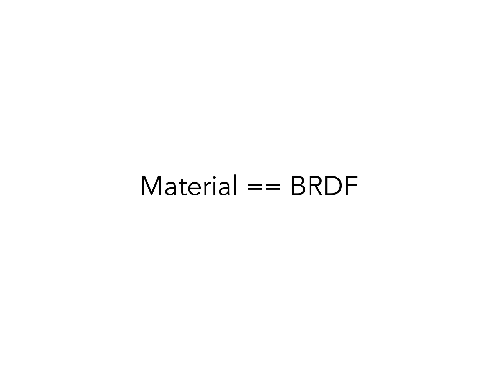
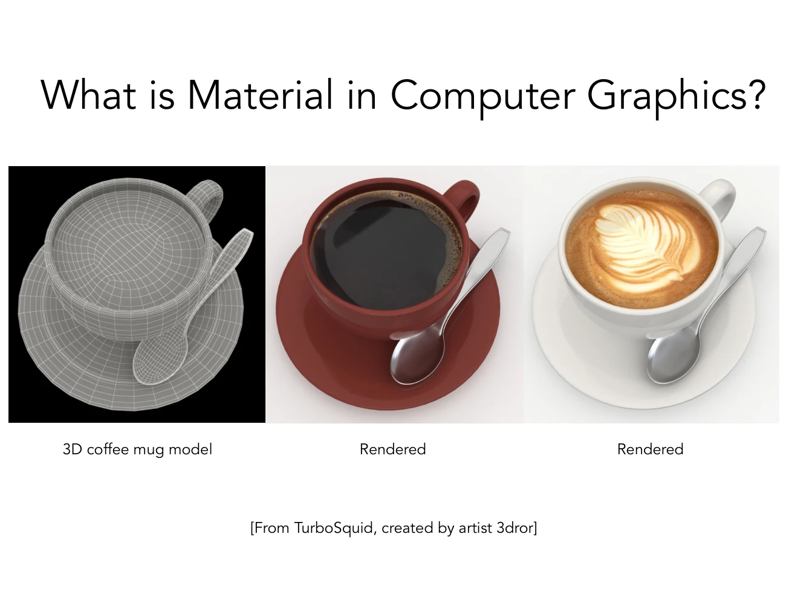
补充说明
BRDF 的量纲是 \(1/\text{sr}\)，在实现中常把 \(\cos\theta_i\) 并入采样概率密度，注意单位一致性。
常见坑
把 BRDF 与“颜色”混为一谈：颜色只是漫反射 BRDF 中的反照率参数，BRDF 还包含角度依赖。
忘记 \(\cos\theta_i\) 因子：BRDF 定义中分母是辐照度，已包含 \(\cos\theta_i\)，写渲染方程时不要重复或遗漏。
UE / Unity 落地
UE 中材质（Material）的底层就是 BRDF：默认使用基于物理的微表面模型，通过 Base Color、Roughness、Metallic 等参数控制。
Unity 的 Standard Shader 同样基于 BRDF，其 Albedo 对应漫反射反照率，Smoothness 控制微表面粗糙度。
022. 漫反射：为什么 BRDF 是常数除以 π
漫反射（Diffuse / Lambertian）材质的特点是：入射光被均匀地反射到所有出射方向，与观察方向无关。现实中的粉笔、粗糙墙面近似这种材质。 \n假设入射光是均匀的（各方向辐射亮度 \(L_i\) 相同），那么出射辐射亮度 \(L_o\) 应该等于多少？根据能量守恒，出射的总辐射通量不能超过入射的总辐射通量。对于常数 BRDF \(f_r\)，出射辐射亮度为： \[\nL_o(\omega_o) = \int_{\mathcal{H}^2} f_r L_i \cos\theta_i \, d\omega_i = f_r L_i \int_{\mathcal{H}^2} \cos\theta_i \, d\omega_i. \]\n半球积分 \(\int_{\mathcal{H}^2} \cos\theta_i \, d\omega_i = \pi\)。所以 \(L_o = f_r L_i \pi\)。如果表面不吸收能量，则 \(L_o = L_i\)，于是 \(f_r = 1/\pi\)。更一般地，引入反照率 \(\rho\)（颜色，范围 0~1），有： \[\nf_r = \frac{\rho}{\pi}. \]\n这里的 \(1/\pi\) 就是为了保证能量守恒。很多初学者会疑惑“为什么不是 \(\rho\)？”，原因就是半球积分产生了 \(\pi\) 因子。 \n课件还展示了均匀颜色漫反射和带纹理的漫反射（Textured diffuse BRDF），后者让 \(\rho\) 随表面位置变化，从而产生图案。
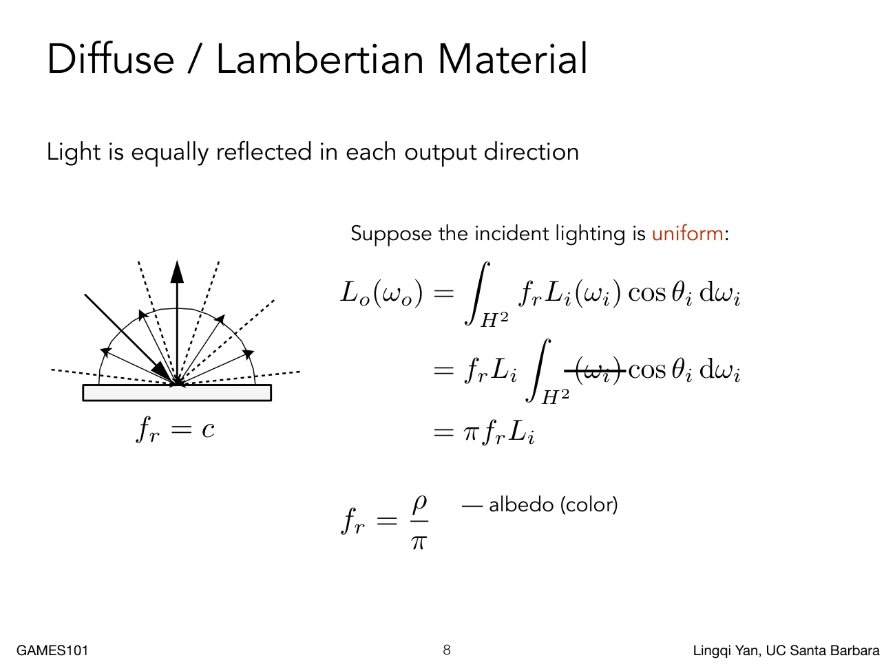
补充说明
如果入射光非均匀，漫反射出射亮度仍然与方向无关，因为 BRDF 是常数，积分结果只取决于总入射辐照度。
常见坑
忘记除以 \(\pi\)：直接令 \(f_r = \rho\) 会导致渲染过亮，能量不守恒。
把漫反射 BRDF 与出射辐射亮度混淆：\(L_o = (\rho/\pi) L_i \pi = \rho L_i\)，所以出射亮度是反照率乘以入射亮度，而不是反照率除以 \(\pi\)。
UE / Unity 落地
UE 中 Base Color 对应反照率 \(\rho\)，但引擎内部已处理 \(1/\pi\) 因子，美术直接调颜色即可。
Unity 的 Albedo 同样对应 \(\rho\)，Standard Shader 内部使用 Lambert 漫反射项。
033. 完美镜面反射与折射：方向怎么算
光泽材质（Glossy）和理想反射/折射材质（如金属、玻璃、水）需要处理镜面反射和折射。
完美镜面反射：入射角等于反射角，且反射方向与入射方向关于法线对称。设入射方向为 \(\omega_i\)（指向表面），法线为 \(n\)，则反射方向： \[ \omega_o = 2(\omega_i \cdot n)n - \omega_i. \]\n注意这里 \(\omega_i\) 是入射光传播方向的反方向（即从表面指向光源），所以公式中 \(\omega_i \cdot n > 0\)。课件中给出的形式是 \( \omega_o = -\omega_i + 2(\omega_i \cdot n)n \)，等价。
折射：光从一种介质进入另一种介质时方向改变，遵循 Snell 定律： \[ \eta_i \sin\theta_i = \eta_t \sin\theta_t, \]\n其中 \(\eta_i\) 和 \(\eta_t\) 分别是入射侧和透射侧的折射率（IOR）。常见值：空气约 1.00029，水约 1.33，玻璃 1.5~1.7，钻石 2.42。 \n当光从光密介质（\(\eta_i > \eta_t\)）射向光疏介质，且入射角大于临界角时，会发生全反射（Total Internal Reflection），没有折射光。临界角满足 \(\sin\theta_c = \eta_t / \eta_i\)。课件中用水下看天空的“Snell 窗口”现象说明：水面下只能看到一个锥形区域内的天空，之外是全反射。 \n折射方向的计算可以通过向量形式推导，但课件只给出了 Snell 定律和全反射条件，我们记住公式和物理意义即可。
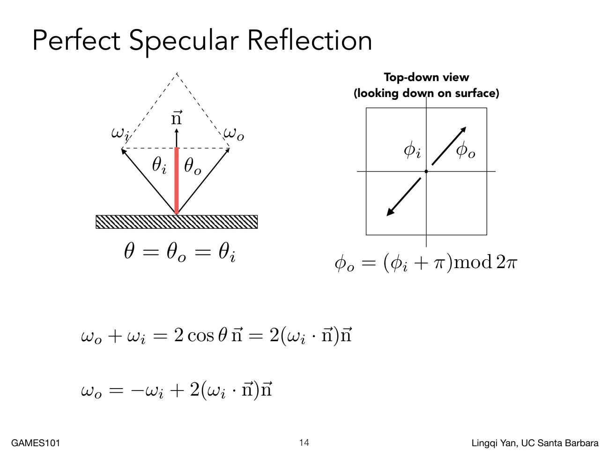
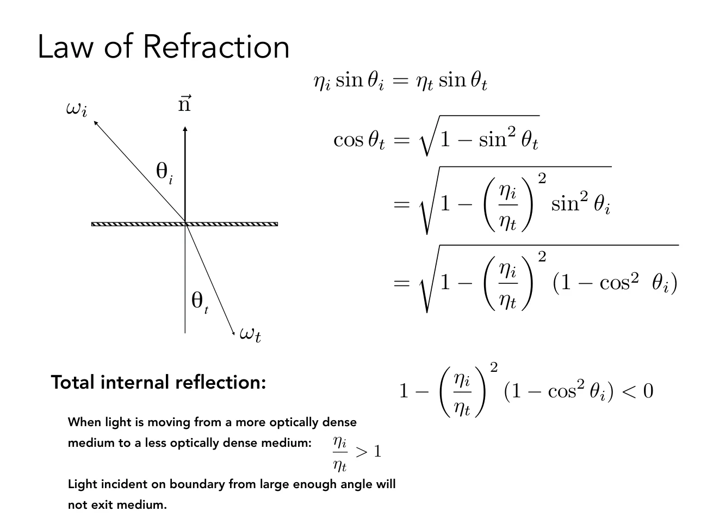
补充说明
实际渲染中，完美镜面反射的 BRDF 是狄拉克 δ 函数，不能直接采样，通常用光线追踪或环境贴图实现。
常见坑
反射方向公式中符号错误：确保 \(\omega_i\) 是单位向量且指向表面外，否则结果方向相反。
忽略全反射条件：当 \(\eta_i > \eta_t\) 且 \(\sin\theta_i > \eta_t/\eta_i\) 时，折射计算会得到负数开根号，必须返回全反射。
UE / Unity 落地
UE 中折射通过 Refraction 引脚和 IOR 参数控制，但默认是近似，不是严格物理折射。
Unity 的 Standard Shader 有 Refraction 选项，需要开启透明并设置 IOR。
044. 菲涅尔项：为什么掠射角更亮
菲涅尔效应描述的是：反射率随入射角变化。垂直入射时反射率最低，掠射角（接近 90°）时反射率趋近于 1。这就是为什么水面在远处看起来像镜子，而近处能看清水下。 \n菲涅尔项与光的偏振有关，精确计算需要区分 s 偏振和 p 偏振，公式较复杂。课件给出的是Schlick 近似，它简单且足够准确： \[\nF(\theta) = F_0 + (1 - F_0)(1 - \cos\theta)^5, \]\n其中 \(F_0\) 是垂直入射时的反射率，由折射率决定： \[\nF_0 = \left(\frac{\eta_i - \eta_t}{\eta_i + \eta_t}\right)^2. \]\n对于空气-玻璃界面（\(\eta_t \approx 1.5\)），\(F_0 \approx 0.04\)，即只有 4% 的光被反射。对于金属（导体），\(F_0\) 可能很高且随波长变化，所以金属有颜色。 \n课件展示了电介质（如玻璃）和导体（如金属）的菲涅尔曲线：电介质在掠射角反射率趋近 1，导体则整体反射率较高。 \n在微表面 BRDF 中，菲涅尔项 \(F(\omega_i, h)\) 使用半程向量 \(h\) 计算，因为微表面将入射光反射到出射方向时，有效的入射角是相对于微表面法线 \(h\) 的。
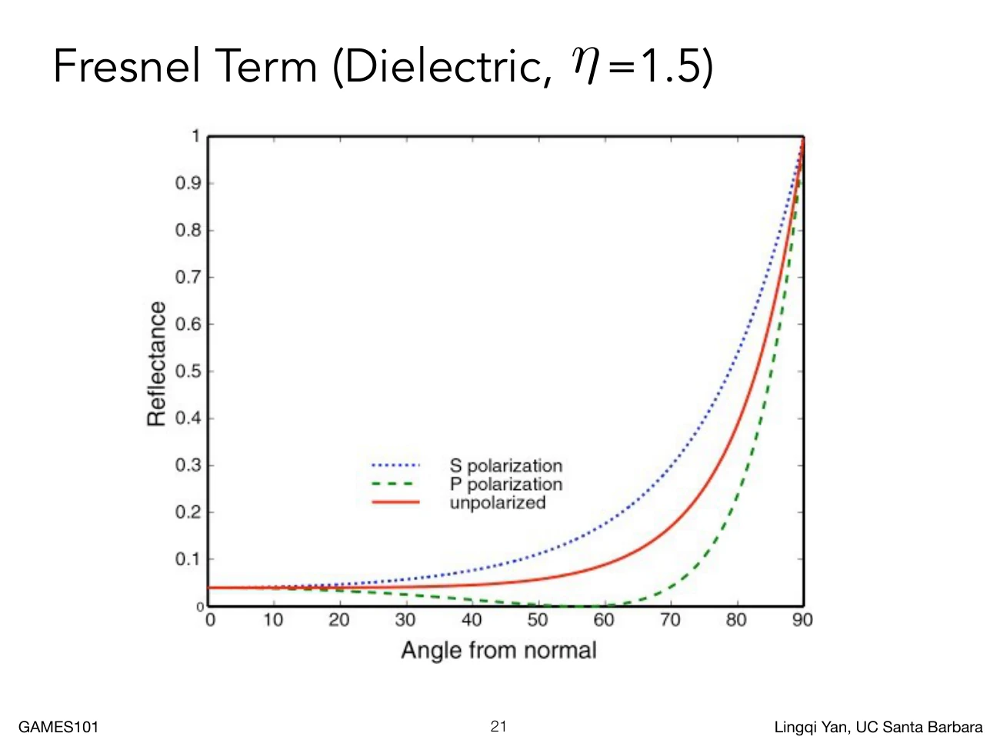
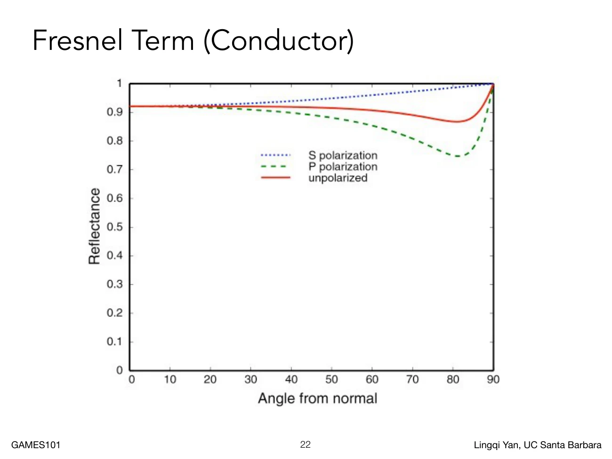
补充说明
Schlick 近似在掠射角可能超过 1，实际实现中常 clamp 到 1。
常见坑
Schlick 近似中角度用 \(\cos\theta\) 而不是 \(\theta\)，且指数是 5 次方。
金属的 \(F_0\) 不能简单用标量，需要按波长（RGB）分别设置，否则金属颜色错误。
UE / Unity 落地
UE 中 Metallic 参数控制 \(F_0\)：金属的 \(F_0\) 取 Base Color，非金属固定约 0.04。
Unity 的 Standard Shader 同样用 Metallic 和 Smoothness 控制菲涅尔行为。
055. 微表面理论：粗糙表面 = 大量微小镜面
真实世界没有完美光滑的表面。微表面理论（Microfacet Theory）认为：宏观上粗糙的表面，在微观上由大量朝向各异的微小镜面（microfacet）组成。每个微表面都是完美镜面，但它们的法线方向分布不同。 \n关键思想：
- 如果微表面法线集中在一个方向（接近宏观法线），表面看起来光滑（glossy）。
-
如果微表面法线分散，表面看起来粗糙（diffuse）。 \n微表面 BRDF 由三项组成： \[\nf(\omega_i, \omega_o) = \frac{F(\omega_i, h) G(\omega_i, \omega_o, h) D(h)}{4 (n \cdot \omega_i)(n \cdot \omega_o)}, \]\n其中：
-
\(h = \frac{\omega_i + \omega_o}{\|\omega_i + \omega_o\|}\) 是半程向量，即微表面法线方向（只有法线为 \(h\) 的微表面才能将 \(\omega_i\) 反射到 \(\omega_o\)）。
- \(F(\omega_i, h)\) 是菲涅尔项，描述微表面的反射率。
- \(G(\omega_i, \omega_o, h)\) 是几何项（shadowing-masking），描述微表面之间的遮挡和阴影。
- \(D(h)\) 是法线分布函数（Normal Distribution Function, NDF），描述微表面法线朝向 \(h\) 的概率密度。 \n分母 \(4 (n \cdot \omega_i)(n \cdot \omega_o)\) 来自立体角变换和微表面投影的雅可比行列式。 \n课件展示了微表面 BRDF 的渲染例子，并指出各向同性/各向异性可以通过改变 \(D\) 函数实现。
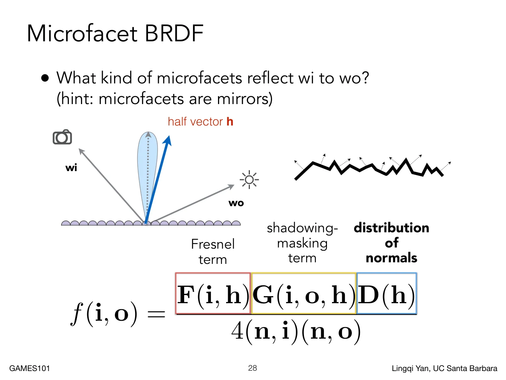
补充说明
常见的 \(D\) 函数有 Beckmann 和 GGX，GGX 有更长的拖尾，更符合真实材质。
常见坑
忘记分母的 \(4 (n \cdot \omega_i)(n \cdot \omega_o)\)，导致能量不守恒。
半程向量未归一化：\(h\) 必须是单位向量，否则 \(D(h)\) 和 \(F\) 计算错误。
UE / Unity 落地
UE 的材质系统基于微表面模型，Roughness 控制法线分布 \(D\) 的尖锐程度。
Unity 的 Standard Shader 使用 GGX 分布作为 \(D\) 函数，Smoothness 是 Roughness 的补。
066. 各向同性与各向异性：方向性从哪来
各向同性（Isotropic）材质：BRDF 只依赖于入射和出射方向与法线的夹角，以及方位角之差，即： \[\nf_r(\theta_i, \phi_i; \theta_r, \phi_r) = f_r(\theta_i, \theta_r, \phi_r - \phi_i). \]\n如果进一步各向同性，则 BRDF 与方位角无关，只依赖于 \(\theta_i\) 和 \(\theta_r\)。 \n各向异性（Anisotropic）材质：BRDF 依赖于方位角差 \(\phi_r - \phi_i\)，但通常不能简化为只依赖差值，而是依赖绝对方位角。典型例子：拉丝金属、天鹅绒、尼龙。拉丝金属的表面微观结构有方向性，导致高光沿特定方向拉伸。 \n课件用电梯里的金属板、拉丝金属锅、天鹅绒等例子说明各向异性效果。在微表面理论中，各向异性通过让法线分布函数 \(D\) 依赖于方位角来实现，例如使用椭圆分布。 \nBRDF 的性质：
- 非负性：\(f_r \ge 0\)。
- 线性：多个光源的贡献可以线性叠加。
- 互易性：\(f_r(\omega_i \to \omega_r) = f_r(\omega_r \to \omega_i)\)。
- 能量守恒：\(\int_{\mathcal{H}^2} f_r(\omega_i \to \omega_r) \cos\theta_i \, d\omega_i \le 1\)。 \n这些性质可用于验证 BRDF 模型是否正确，也可用于加速测量和渲染。
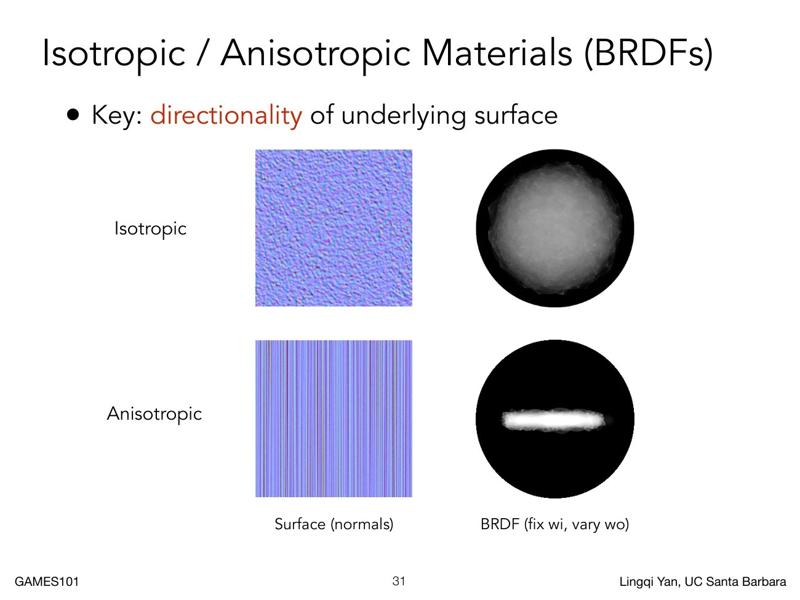
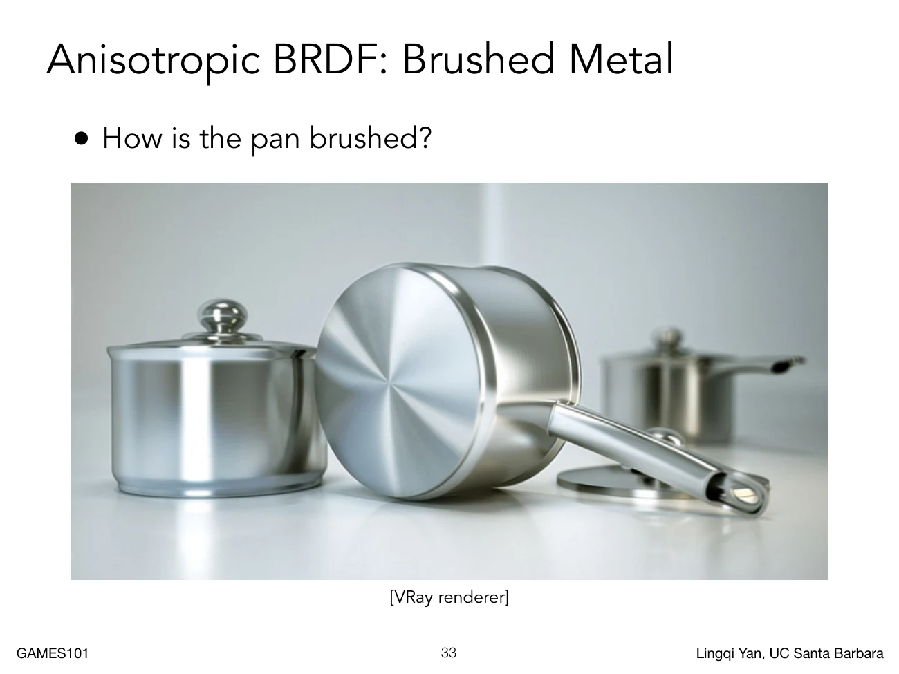
补充说明
互易性意味着从 A 到 B 的反射等于从 B 到 A，可用于双向测量减少一半工作量。
常见坑
把各向异性简单理解为“高光形状不同”，实际上它改变了 BRDF 对方面角的依赖关系。
在实现各向异性时，切线方向未正确设置，导致高光方向错误。
UE / Unity 落地
UE 中 Anisotropy 参数控制各向异性，需要设置切线方向。
Unity 的 HDRP 支持各向异性材质，通过 Tangent 控制方向。
077. 测量 BRDF：从现实到数据
既然 BRDF 决定材质，那么如何获得真实材质的 BRDF？答案是测量。测量 BRDF 可以避免开发复杂的解析模型，并且能自动包含所有散射效应。 \n测量设备称为角反射计（gonioreflectometer），它通过机械臂移动光源和传感器，测量不同入射和出射方向下的反射率。基本流程：对于每个出射方向，移动光源；对于每个入射方向，移动传感器；测量辐射亮度。 \n测量面临挑战：
- 掠射角测量困难（菲涅尔效应强）。
- 高频镜面反射需要密集采样。
- 逆反射（retro-reflection）难以测量。
- 空间变化材质（spatially-varying）需要大量测量。 \n测量得到的数据需要表示。常见方法：表格存储，按 \((\theta_i, \theta_o, |\phi_i - \phi_o|)\) 规则采样。但存储量巨大，例如 MERL BRDF 数据库包含 100 种材质，每种约 33MB。 \n理想表示应具备：紧凑、准确、高效求值、便于重要性采样。实际中常将测量数据拟合到解析模型（如微表面模型），或使用数据驱动方法。
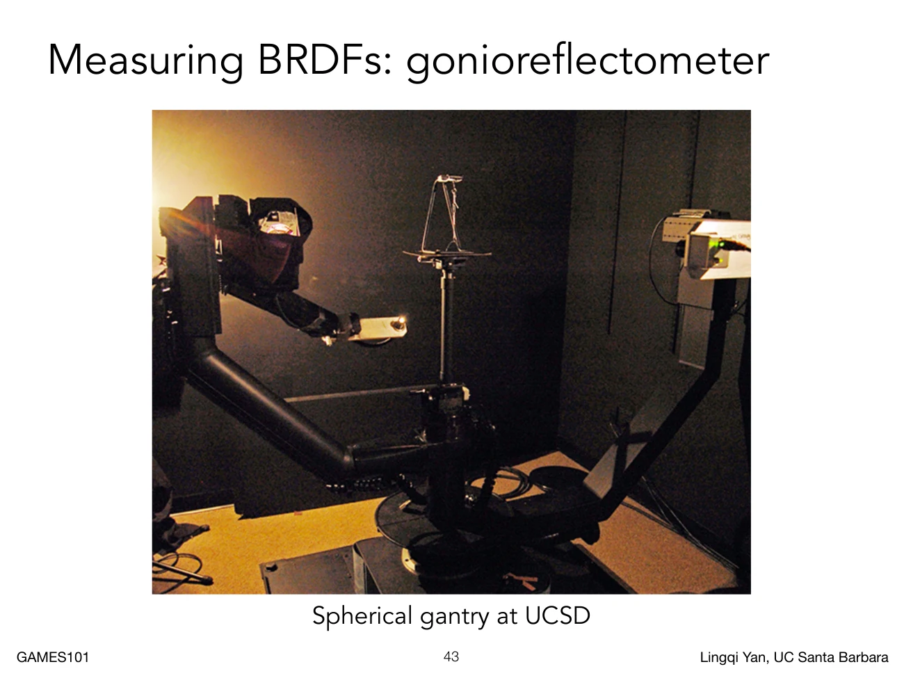
补充说明
MERL BRDF 数据库是常用的测量 BRDF 数据集，常用于研究。
常见坑
认为测量 BRDF 可以完全替代解析模型：测量数据存储大、难以编辑，实际渲染常需拟合。
忽略互易性：利用互易性可将测量次数减半。
UE / Unity 落地
UE 的材质通常使用解析 BRDF 参数化，而非直接测量数据；但可用测量数据制作纹理。
Unity 的 Standard Shader 也是参数化模型，不支持直接导入 BRDF 表格。
引擎对照表
| 概念 / 效果 | Unreal Engine | Unity |
|---|---|---|
漫反射反照率 | Base Color | Albedo |
微表面粗糙度 | Roughness | Smoothness（反向） |
金属度与菲涅尔 | Metallic | Metallic |
各向异性 | Anisotropy | HDRP 中 Anisotropy |
折射率 | Refraction 与 IOR | Refraction 与 IOR |
术语双语表
| English | 中文 | 说明 |
|---|---|---|
| BRDF | 双向反射分布函数 | 描述入射光如何被表面反射到出射方向的函数。 |
| Diffuse / Lambertian | 漫反射 | 光线均匀反射到所有方向，BRDF 为常数 \( \rho/\pi \)。 |
| Specular Reflection | 镜面反射 | 入射角等于反射角，反射方向关于法线对称。 |
| Snell's Law | 斯涅尔定律 | 描述折射角与入射角的关系：\(\eta_i \sin\theta_i = \eta_t \sin\theta_t\)。 |
| Total Internal Reflection | 全反射 | 光从光密到光疏介质且入射角大于临界角时，全部反射。 |
| Fresnel Term | 菲涅尔项 | 反射率随入射角变化，掠射角反射增强。 |
| Microfacet Theory | 微表面理论 | 粗糙表面由大量微小镜面组成，用统计分布描述。 |
| Isotropic / Anisotropic | 各向同性/各向异性 | BRDF 是否依赖方位角，各向异性有方向性高光。 |
| Reciprocity | 互易性 | 交换入射和出射方向，BRDF 值不变。 |
课后练习
01 证明漫反射 BRDF 为 \(f_r = \rho/\pi\) 时，若入射光均匀且 \(\rho=1\)，出射辐射亮度等于入射辐射亮度。
查看答案
提示：
利用半球积分 \(\int_{\mathcal{H}^2} \cos\theta_i d\omega_i = \pi\)。
出射辐射亮度 \(L_o = \int f_r L_i \cos\theta_i d\omega_i = (\rho/\pi) L_i \int \cos\theta_i d\omega_i = (\rho/\pi) L_i \cdot \pi = \rho L_i\)。当 \(\rho=1\) 时，\(L_o = L_i\)，能量守恒。
02 光从空气（\(\eta_i=1\)）射入玻璃（\(\eta_t=1.5\)），入射角为 45°，求折射角。
查看答案
提示：
使用 Snell 定律 \(\eta_i \sin\theta_i = \eta_t \sin\theta_t\)。
\(1 \cdot \sin 45° = 1.5 \cdot \sin\theta_t\)，所以 \(\sin\theta_t = \frac{\sqrt{2}/2}{1.5} \approx 0.4714\)，\(\theta_t \approx 28.1°\)。
03 解释为什么金属的菲涅尔反射率在垂直入射时可能很高，而玻璃只有约 4%。
查看答案
提示：
从 \(F_0 = ((\eta_i-\eta_t)/(\eta_i+\eta_t))^2\) 和导体中电子行为考虑。
对于电介质，\(F_0\) 由折射率差决定，玻璃 \(F_0 \approx ((1-1.5)/(1+1.5))^2 = 0.04\)。金属内部有自由电子，折射率为复数，导致 \(F_0\) 很高且随波长变化，因此金属反射强且有色。
04 微表面 BRDF 中三项 D、F、G 分别代表什么？如果粗糙度增加，D 函数会如何变化？
查看答案
提示：
D 是法线分布，F 是菲涅尔，G 是几何遮蔽。
D 是微表面法线分布函数，描述法线朝向半程向量的概率密度；F 是菲涅尔项，描述微表面反射率；G 是几何遮蔽项，描述微表面之间的遮挡。粗糙度增加时，D 函数变得更宽（法线分布更分散），高光更模糊。
05 在 UE 中创建一个拉丝金属材质，需要调整哪些参数？
查看答案
提示：
考虑 Metallic、Roughness、Anisotropy 和切线方向。
设置 Metallic=1，Roughness 较低（如 0.2），开启 Anisotropy 并设置 Anisotropy 强度（如 0.8），同时通过切线方向控制拉丝方向。Base Color 设为金属颜色。